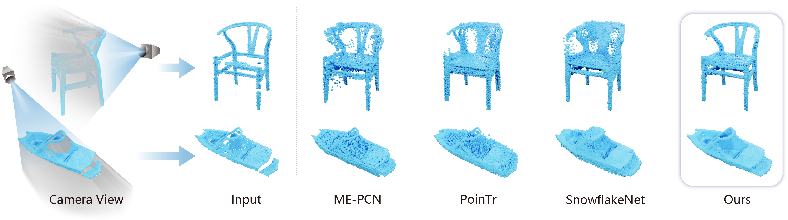

3D Generative Models
Scalable native 3D generation from images and text, compact 3D latent spaces, and multi-modal controllable generation.
Researcher at Tencent Hunyuan, building the Hunyuan3D family of 3D foundation models.
My research lies at the intersection of computer vision, computer graphics and generative AI. I focus on large-scale 3D asset generation — from compact 3D latent representations and image/text-to-3D diffusion, to production-ready PBR materials and end-to-end pipelines for game-ready assets. Before joining Tencent, I studied at Xi'an Jiaotong University with Prof. Xi Zhao, working on point cloud completion and 3D shape understanding.
Scalable native 3D generation from images and text, compact 3D latent spaces, and multi-modal controllable generation.
High-fidelity PBR texture synthesis, end-to-end AI pipelines for game-ready assets, and benchmarks for 3D generation.
Point cloud completion, primitive-based shape abstraction, and 3D human pose reconstruction from partial observations.
Released HY3D-Bench, a benchmark for 3D asset generation. [arXiv]NEW
Released Hunyuan3D-Omni for controllable 3D generation and Hunyuan3D Studio, an end-to-end pipeline for game-ready assets.
Open-sourced Hunyuan3D 2.1 with production-ready PBR materials. [Code]
Released Hunyuan3D 1.0, a unified framework for text-to-3D and image-to-3D generation.
Compress3D accepted to ECCV 2024.
Shape Completion with Points in the Shadow accepted to SIGGRAPH Asia 2022. [Project]

No publications match your search.
Core member of the Hunyuan3D team, working on large-scale 3D generative models, PBR texture generation and production pipelines for 3D assets.
Advised by Prof. Xi Zhao. Research on point cloud completion, 3D shape abstraction and single-image 3D generation.